expert
A platform for job seekers to get help with interview practice, resume writing and job search-related problems from a certified expert in the field.
Overview
expert is an app designed to help job seekers ace their job search journey from resume writing to interview practice with real-life experts. This app is specially designed for fresh graduates or someone who has not had to look for a job in a long time. expert is affordable as users don’t need to pay a subscription fee. Users can choose what they need help with, and the app will find the best match based on locations, language, ratings, availability and gender. Users can support their experts by tipping them for as little as $5, all experts on the platform will receive 95% of the tip.
Hypothesis Statement
Our personas need a way to get an opinion or answer from a trustable expert about their questions because they feel like information on the internet may not be reliable and lack credibility or they need deeper insight from an expert. We will know this is true when we can see return traffic on the platform, certified users leave positive feedback for the app and still use the app to ask questions or get an expert’s opinions.
Solution
Create a platform for users to get connected to a certified expert through one-on-one video, voice calls, or messages. This will lead to personalised and tailored advice according to the users’ goals and needs.
Goal
My goal for this app is to help job seekers ace their job search journey by designing an easy-to-use and affordable platform.
Design Process
Using the design-thinking process I divided my process into four stages with achievable deliverables. Here is my end-to-end design process.

01 Understanding
To understand what the market is like, I conducted a competitive analysis on a similar platform (ADPList) and here are my findings:
02 Research
To understand potential users for this app, I conducted a user interview to understand how participants prepare for job interviews and to understand what their job search processes are like.
User Interview
Participants usually utilise the internet using sources such as Google and Youtube to help them with resume writing and interview tips. Below are a few pain points participants experience:
- Interview tips and Q&A on the internet are too general and all of them have the same point.
- No one to practice interview with.
- Some don’t have anyone to help them at all.
- The most challenging part of a job search is attending an interview, especially if they haven't been to one recently.
User Personas
Using all the insights from my user interview, I created 3 user personas with different goals and needs.
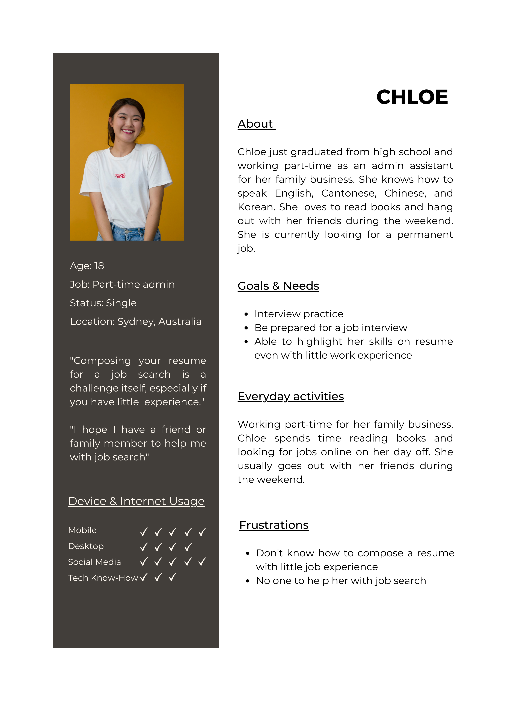 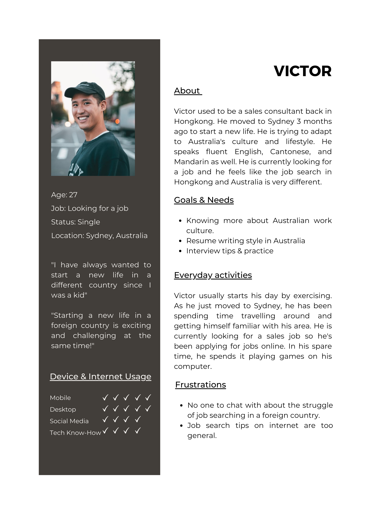 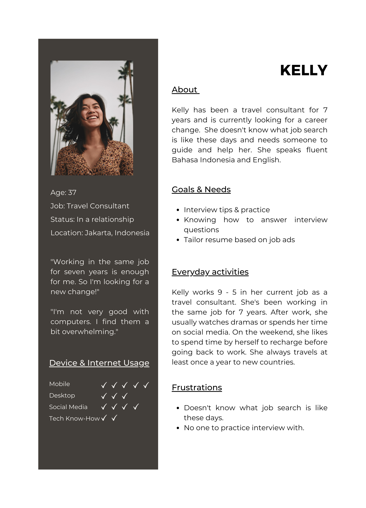User Journey
After creating my user personas, I also created user journey and user flow to sympathise with my personas by picturing what steps they need to go through to finish their tasks.
03 Ideate
To start visualising what my app will look like, I started to draw a sitemap and conduct an open card-sorting to verify my assumption.
Sitemap & Card-Sorting
My first step to ideate is to create an initial sitemap, to verify my assumption, I conducted an open card-sorting with 10 participants using OptimalSort.
For a full card-sorting report, click here
Prototype
To put my sitemap into pictures, I start sketching what my app will look like by creating a low-fidelity prototype with paper and pencil. After that, I transferred it to mid-fidelity using Figma.
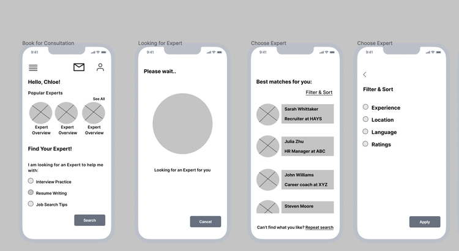 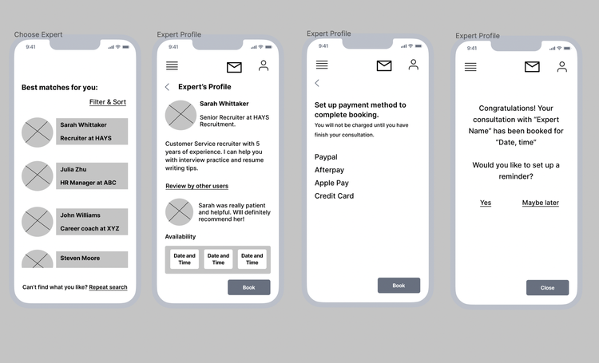04 Usability Test
After transferring my prototype to mid-fidelity, it’s time to conduct a usability test to assess the learnability of new users interacting with the Expert app for the mobile version.
Key Functions
- Creating account and onboarding
- Looking for Experts
- Booking for a consultation
Tasks
- You need help from an Expert with your job search-related problem. Please complete the signup and onboarding process to start.
- You need someone to practice your interview with. Find an Expert who speaks Chinese to help you with your practice and book a consultation with them.
- After finishing the booking process, please join the consultation with your Expert and record your consultation.
- After finishing your consultation, you want to rewatch your consultation. Please go to your saved video.
- You would like to review the notes that you have saved. Please look for your notes.
Key Findings
Key findings after conducting the usability test:
- Coach mark on the home page is confusing, lacks an indicator, and has to be skipped before pressing anything else.
Evidence"It's a bit annoying how you can't choose anything else before skipping the coach mark." - Participants #1 and #2 - Some areas are not clickable which frustrates participants.
EvidenceParticipants #1 and #2 were trying to click on other unclickable areas and seemed to be frustrated as there were no responses from the prototype. - No indicator to inform users that their search results have been filtered.
Evidence2 participants were not sure whether the search results have been filtered because there was no indicator. Participants had to repeat to process to make sure. - The indicator is not obvious enough, participants couldn’t tell whether they have click their option or not.
EvidenceParticipants #2, #4, and #5 had to double click a button or an option because the indicator was not obvious enough.
05 Iterate
Based on the usability test findings, I improve my design and came up with solutions to address the problems participants had during the usability test. At this stage, I also upgrade it to high-fidelity to make the app look and feel more realistic.
Solutions
To solve the participants’ problems during the usability test, I made a few changes to improve the user experience. See below.
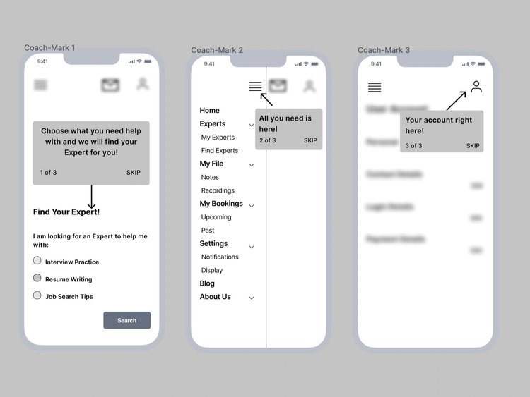 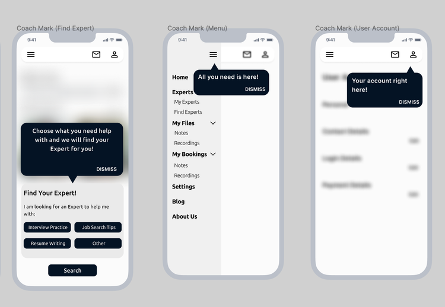Before:The coach mark on the home page is confusing, lacks an indicator, and has to be skipped before pressing anything else.
After:Coach mark will only appear when user click on a feature for the very first time. Users can dismiss all of them by clicking “Dismiss” or by tapping or clicking somewhere else.
Polishing the Design
Below is the transition from low to high-fidelity on main screens. These changes are made based on feedback received from my tutor and peers.
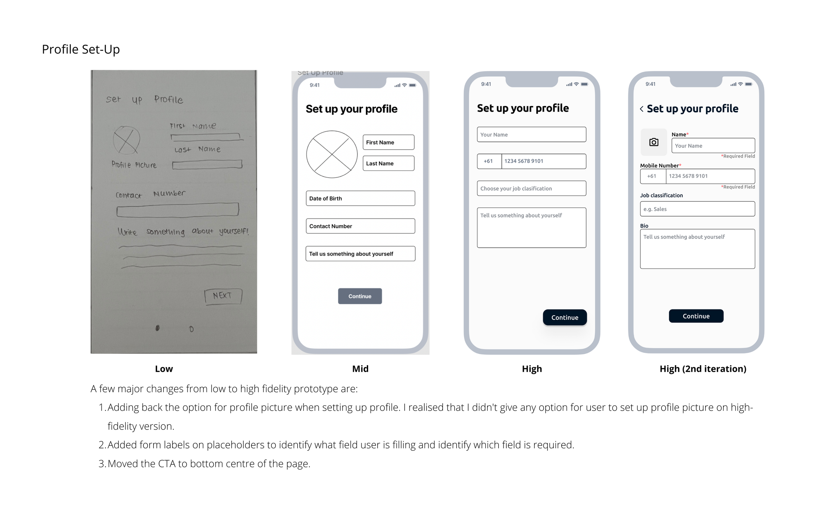 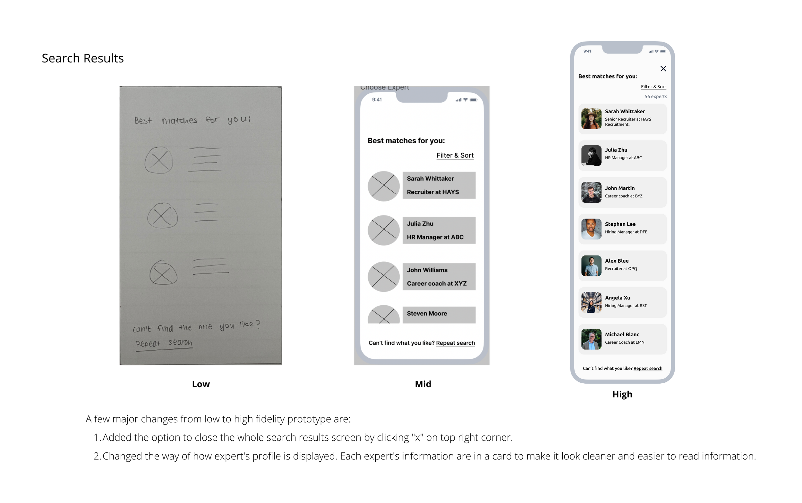 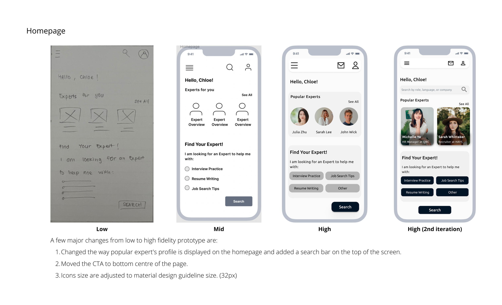 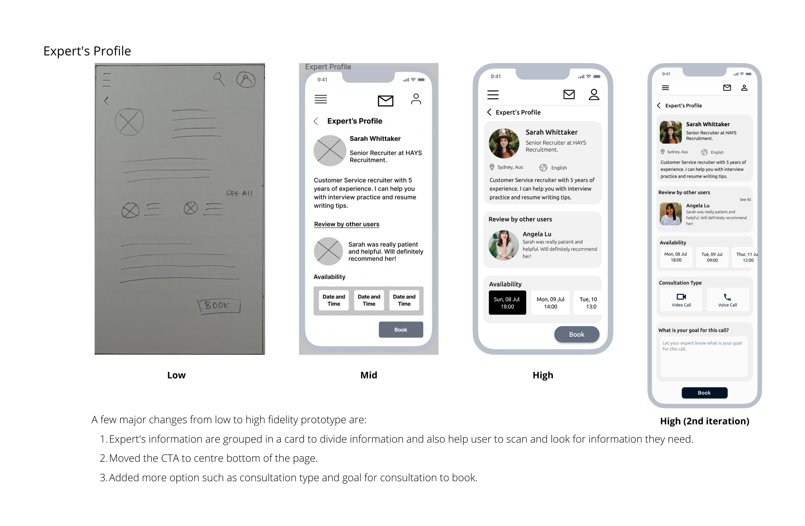 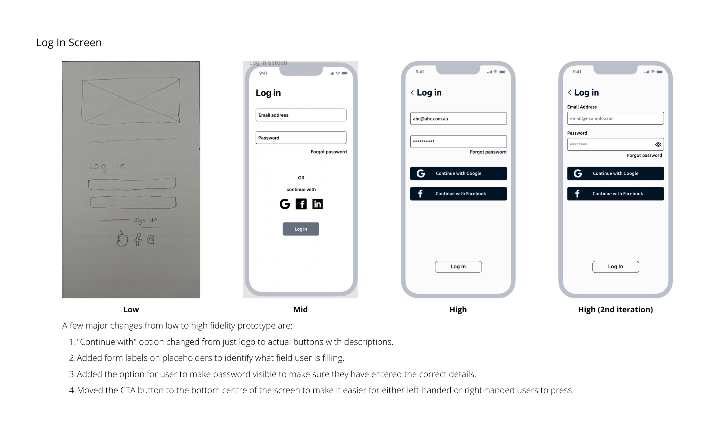For a full usability test report, click here
06 Design System
To make sure the handoff process is easier, I have included the design system for this app.
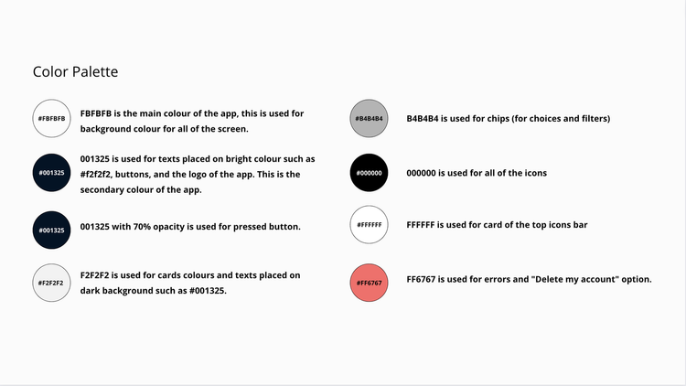 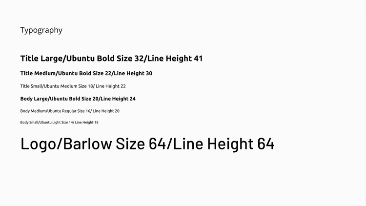 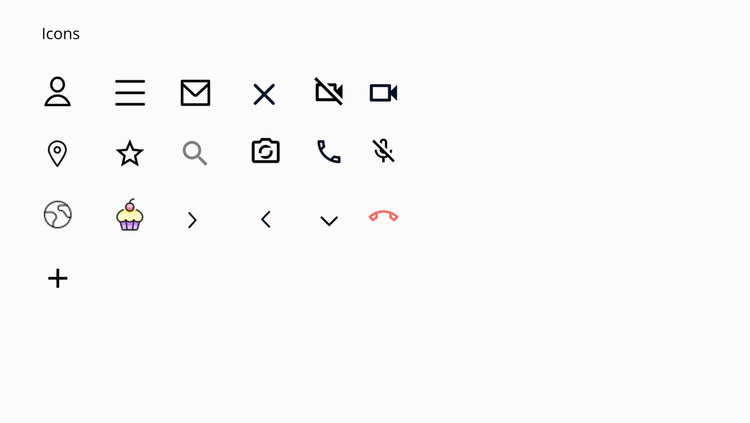 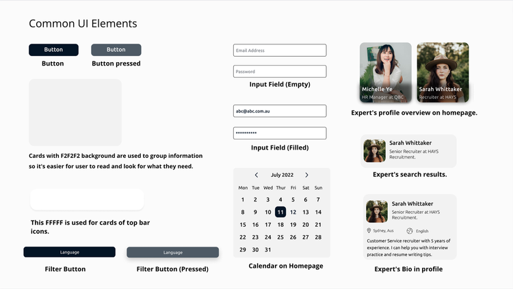Takeaway & Learnings
As someone without a design background, this project is really challenging for me. There were a lot of terms and applications that is foreign to me but it didn’t stop me from learning.
I am aware that there is still a lot to improve on this project. If I could re-do this project again, I would:
- Make sure to have a separate file for each mid and high-fidelity. For this project, I changed from mid-fidelity to high-fidelity without creating a separate file hence I don’t have an actual file for the mid-fidelity version. Luckily, I have some screenshots from my assignments.
- I will learn more about “Material Design” to ensure the platform I design follows the Google guidelines.